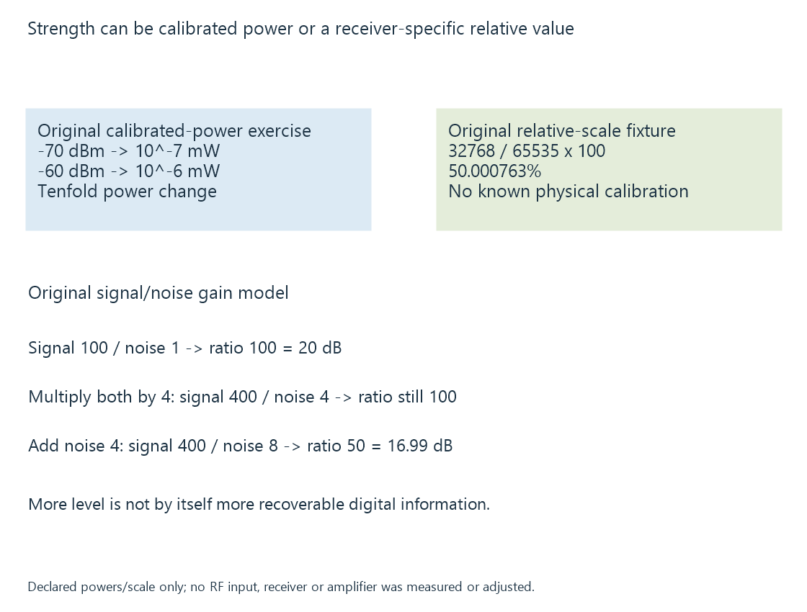

TV signal strength
TV signal strength is a receiver-reported input-level measurement or estimate whose units, calibration and observation context determine its interpretation.
Signal strength describes a received input level reported or estimated by the receiver. Its unit and calibration belong to the implementation.
It is different from how accurately the digital data is recovered. A strong unwanted contribution or a distorted input can make a large level reading without making the programme usable.
Calibrated power uses a reference
dBm expresses power relative to one milliwatt:
P(mW) = 10^(dBm / 10)
An original −70-dBm level is 10^-7 mW. At −60 dBm, it is 10^-6 mW: ten times the power.
The negative values are not negative physical power. They describe a power smaller than the reference.
A real receiver’s reported level can be calibrated or estimated through its frontend behavior. The field’s documentation should identify that scope.

A relative percentage needs its own scale
Use an original readable report:
{
"metric": "strength",
"scale": "relative",
"value": 32768,
"declaredMaximum": 65535,
"physicalCalibration": null
}
Under that declared normalization:
100 × 32768 / 65535 = 50.000763%
The object is not a native frontend query or a device capture. Its ratio produces a relative percentage, not a physical power conversion.
Without a calibrated mapping, fifty percent cannot be assigned a universal dBm value. Nor must another receiver’s fifty-percent reading represent the same input level.
Linux frontend statistics distinguish declared scale types and unavailable measurements. SiliconDust’s strength/quality descriptions give another product-specific interpretation.
Gain can raise signal and noise together
For an original linear-power model, let wanted signal power be 100 units and noise power one unit. Their ratio is 100, or twenty decibels.
Multiplying both by four gives signal 400 and noise four. The strength has increased while the ratio remains 100.
If the amplifier then adds four more noise units under this model, the result is signal 400 divided by noise eight: ratio fifty, approximately 16.99 dB.
These are invented values. They do not recommend a real amplifier, gain or receiver input level.
The calculation explains why “more strength” and “better recoverable data” need separate evidence.
The recovered output answers the next question
Signal quality describes other reception/error-margin observations. Uncorrectable errors describe a later integrity result at a defined stage.
For Emby playback, the relevant input reading belongs to the source receiver. A client displaying a damaged picture is observing a later stage that can include reception, network delivery and media processing.